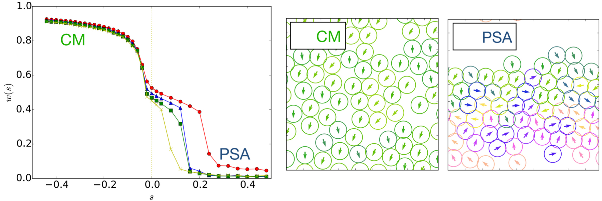
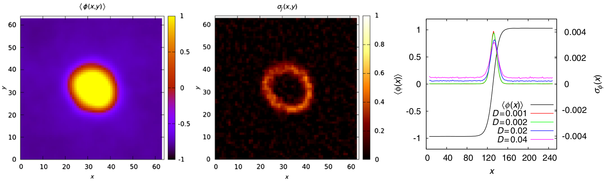
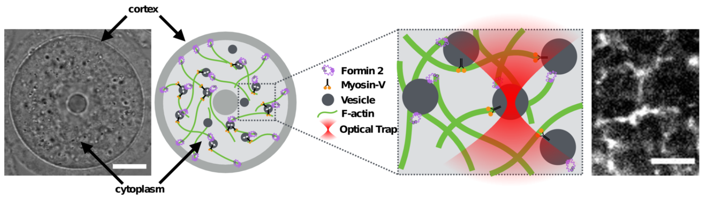

Nonequilibrium systems, driven either by external fields or through active internal processes, are characterized by a constant dissipation of energy in their environment. A challenge is to anticipate how changing the energy dissipated by interacting particles affects their collective behavior. Can we induce phase transitions by enforcing atypical dissipation? Are there unexpected self-assembly pathways based on tuning reliably interactions with dissipation? We explore this by means of a change of ensemble where a specific parameter controls dissipation similarly to how temperature controls energy in equilibrium. In practice, methods of large deviations enable one to simulate and predict the dynamics in this ensemble. Changing ensemble not only varies the dynamical parameters but also modifies the dynamical rules by introducing novel interactions. Therefore, we show that it leads to unexpected transitions such as the emergence of a flocking state despite the lack of microscopic alignment.

Active particles extract energy from their environment to perform a directed motion. Canonical examples at the micro-scale are given by swimming organisms and artificial swimmers, such as bacteria and Janus colloids in a fuel bath. Intuition built on the experience of equilibrium systems has proven effective to predict the large scale behaviors. An open question is then to determine how the local energy dissipation, which drives the system away from equilibrium, can affect the emerging collective effects. What is the signature of energy transfers in the dynamics? How efficient are active particles in promoting collective motion? We develop some techniques to capture the deviation from equilibrium at different time and length scales. This leads us to delineate some regimes where the tools of thermal statistical mechanics still have their say. Overall, we propose a thermodynamic framework to evaluate the energetic cost of activity, as a way to quantify how active systems can sustain some dynamics and phases without any equilibrium equivalent.

Living systems operate far from equilibrium due to the continuous injection of energy within cells. The dynamics and structure of the intracellular medium are mainly driven by nonequilibrium stochastic processes, such as motor protein activity and cytoskeletal filament (de)polymerization. A central issue is to elucidate how active fluctuations can drive large scale transport in the cell. What are the typical length, time and energy scale of such fluctuations? How are they related to the kinetic and mechanical properties of motors and filaments? How is the chemical energy dissipated by ATP/GTP hydrolysis transmitted to the intracellular components? We combine passive and active microrheology methods, applied on tracer particles which act as probes of the internal fluctuations. We reproduce these measurements with some phenomenological models, which allows us to extract quantitative information about the molecular details of subcellular processes, and to provide some predictions on the efficiency of such processes to power motion in living systems.